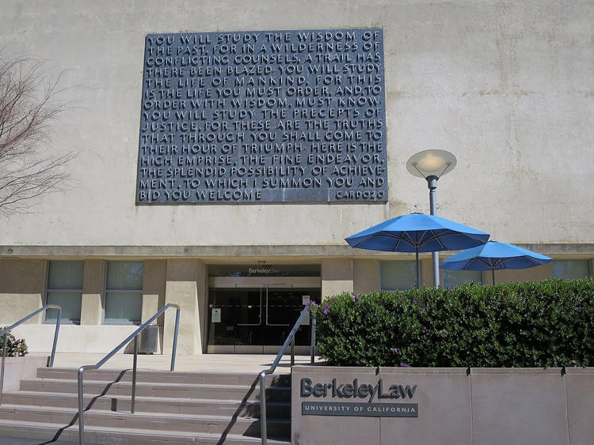

What the letter says
On September 9, 2026 the Civil Rights Division of the U.S. Department of Justice and the U.S. Department of Education published joint findings. The target was the University of California, Berkeley School of Law. The claim was not a press-conference hint. It was a findings letter to the school's counsel, Tania Faransso of WilmerHale.
Assistant Attorney General Harmeet K. Dhillon wrote that Berkeley Law "deliberately discriminates against applicants based on race." The alleged violations are Title VI of the Civil Rights Act of 1964 and the 2023 Supreme Court decision in Students for Fair Admissions v. Harvard. Title VI applies because the campus takes federal education money. The letter put that figure at $369,122,992.35 received from the Department of Education as of September 3, 2026.
KRON4 carried the local version the next morning. The headline was the one that travels: the school discriminates against White and Asian students in favor of Black applicants with lower LSAT scores.
2025 odds
5.8x
DOJ: Black applicants had 5.8 times the odds of a comparable White applicant.
2024 odds
6.5x
Same comparison, prior cycle. Asian applicants were disadvantaged to a similar degree, the letter says.
LSAT gap
~5 pts
Median Black admit vs. median White and Asian admits, 2021 through 2025.
The table they published
The letter did not stop at a ratio. It printed median LSAT scores for admitted students by race for five incoming classes. That is the part a Valley reader can hold without a lawyer.
| Race | 2021 | 2022 | 2023 | 2024 | 2025 |
|---|---|---|---|---|---|
| Asian | 172 | 172 | 173 | 172 | 172 |
| White | 171 | 172 | 173 | 172 | 172 |
| Hispanic | 168 | 169.5 | 170 | 169 | 170 |
| Black | 165.5 | 166 | 167 | 164 | 167 |
Source: DOJ and Department of Education findings letter, September 9, 2026. Medians for admitted applicants.
Two more cuts from the same letter. Combined 2024 and 2025: half of admitted Black applicants had LSAT scores below 95 percent of admitted White applicants. Thirty-seven percent scored below 99 percent of admitted White applicants. Dhillon wrote that the magnitude and durability of the pattern "could not reasonably have occurred by chance."
The letter does not publish the statistical model behind "comparable." That word is doing work. LSAT and undergraduate GPA are the metrics named in the coverage. Soft factors are not in the table.
Headcount is not the same fact
Odds and seats are different measurements. They can both be true at once. Public reporting of Berkeley Law's October 2025 enrollment put the school at 1,128 students: 516 White, 293 Asian, 130 Hispanic, 51 Black. Above the Law used those numbers as a counterweight. If the thumb is on the scale, the argument went, the scale is still producing a small Black class.
That is not a rebuttal of the odds ratio. It is a reminder not to confuse a multiplier with a census. A 5.8 on comparable files can exist inside a class that is still majority White and Asian. The letter is about how files were chosen. The roster is about who ended up in the building.
The back door they named
After SFFA, race as a checked box in admissions is supposed to be closed. The letter says Berkeley Law used other doors. Essay prompts asked how an applicant would contribute diversity in classrooms and community, and invited race and ethnicity as examples of what prior applicants had included. A separate form asked applicants, if it "resonates," to name one primary identity so they could be grouped with others who share it. Decline to state was an option. The Department called the grouping plan intentional separation by race.
California readers already have a third text on the table. Proposition 209 has banned racial preferences in public education since 1996. UC Berkeley's public statement after the letter leaned on that history. The campus said it has "scrupulously abided" by the amendment and that every student is admitted on merit, not race, sex, color, ethnicity, or national origin. It promised to "spare no effort" to show compliance.
Dean Erwin Chemerinsky's own statement was shorter and tighter. Berkeley Law's policy, he said, is that race is not considered in any way. Schools may pursue diversity, he added, so long as they give no preferences based on race. "Berkeley Law does not do so."
What the dean said when he thought it was theory
The findings letter spends pages on Chemerinsky's public writing, not because an op-ed admits a file. Because the Department is trying to prove intent. Before SFFA he told The New Yorker that schools could replace "the explicit use of race" with "proxies for race." After the decision he wrote that colleges would need to find ways to achieve diversity "that can’t be documented as violating the Constitution." He also wrote that presentation matters. If a practice is framed with race-neutral justifications, he said, it is more likely to be allowed. "It is very important not to talk about it in terms of it being an attempt to circumvent the decision."
The letter then quotes a video about faculty hiring, not admissions. That distinction belongs on the page. In the video Chemerinsky describes "unstated affirmative action" and tells a room that if he is ever deposed he will deny saying it. Then the line the letter treats as the tell:
"Anytime somebody says, you know, we should really prefer this candidate over this candidate, because this person would add to diversity, don’t say that. You can think it, you can vote it, but our discussions are not privileged, so don’t ever articulate that that’s what you’re doing."
Quoted in the September 9, 2026 findings letter as a statement about faculty hiring at Berkeley Law.
Think it. Vote it. Do not articulate it. That is a method. It is also a confession that the legal constraint is being treated as a speech constraint. The Department wants the method read across the building. The dean wants it confined to a hiring anecdote. A court, if there is one, will have to decide whether the LSAT table plus the essays plus the talk is enough.
Why it sits on this desk
Berkeley is not the Tower District. The people who live around Wishon and Olive do not sit on that faculty appointments committee. They do sit under the same two rules. Prop 209 is California law. Title VI is the price of federal money. A kid from 93728 who burns a year on the LSAT is supposed to be measured by the same instrument as a kid from Piedmont.
This archive already treats verified skill as a public good. A score is not a soul. It is a comparable. When an institution keeps the comparable and then moves the line by race, the comparable stops being a public fact. When the same institution says the line did not move, the table is how you check.
The other check is honesty about small numbers. Fifty-one Black law students in a school of 1,128 is not a takeover. It is also not an answer to a 5.8 on matched files. Both sentences can be written without a slogan.
Closing
If the rule is no race, the table has to look like no race.
The Department says settle or be sued. The school says it already complies. California banned the preference in 1996. The Court banned it again in 2023. The remaining argument is whether "do not articulate it" is a compliance plan. It is not.
Sources
- U.S. Department of Justice, Office of Public Affairs, press release 26-1033, September 9, 2026. Joint investigation by DOJ Civil Rights Division and U.S. Department of Education. Quotes from Assistant Attorney General Harmeet K. Dhillon and Education Assistant Secretary Kimberly Richey. Findings letter linked from the release.
- U.S. Department of Justice, Civil Rights Division, findings letter to Tania Faransso, WilmerHale, September 9, 2026. LSAT median table for 2021–2025 admits. 5.8x (2025) and 6.5x (2024) odds. Combined 2024–2025 cuts at the 95th and 99th percentiles. Application language on diversity essays and primary-identity grouping. ED funding figure. Chemerinsky quotations from The New Yorker, the Los Angeles Times, The Hill, the Berkeley Law dean page, and the faculty-hiring video.
- KRON4, "DOJ says UC Berkeley law school racially discriminates," September 10, 2026. Campus statement on Proposition 209 and merit admissions.
- ABA Journal, Julianne Hill, September 10, 2026. Chemerinsky response: race is not considered in any way. Five-point median LSAT gap over five years.
- The Hill and Above the Law, September 10, 2026. October 2025 enrollment reported as 1,128 students: 516 White, 293 Asian, 130 Hispanic, 51 Black.
- Students for Fair Admissions v. Harvard, 600 U.S. 181 (2023). California Constitution, Article I, section 31 (Proposition 209, 1996). Title VI of the Civil Rights Act of 1964.
This page is a High Tower District civic record attached to public documents. It is not a court finding. The Department has announced findings and invited a resolution agreement. The school denies the violation. No lawsuit had been filed when this page was built.